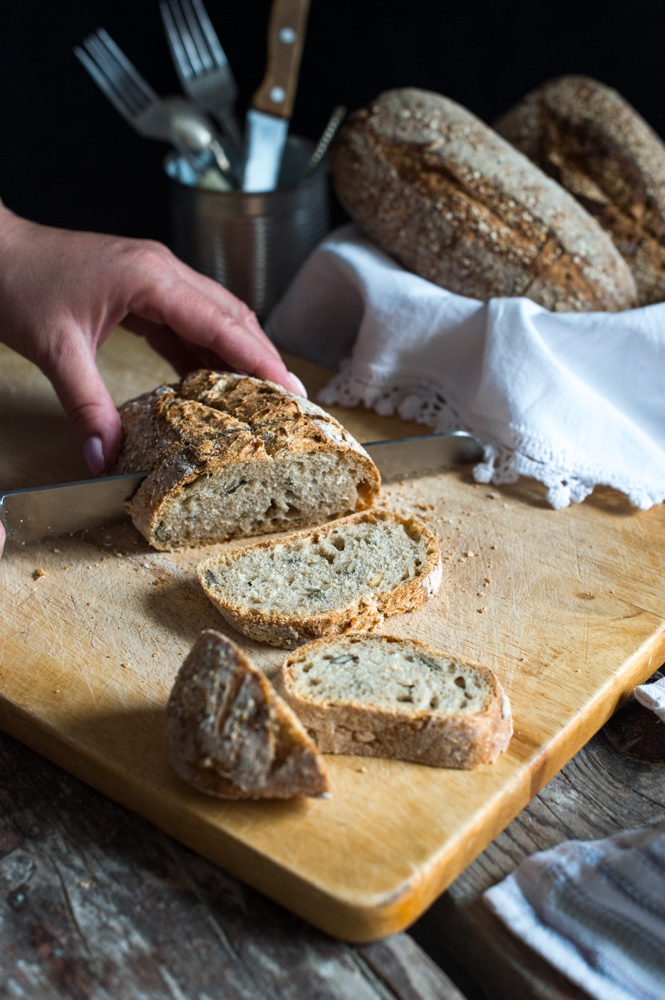

About Us

This website was created in order to help you find
the various types of bread. Although it's not a wide
spread topic, it's an important and fascinating world.
Not for you maybe, but it is. Even if you don't care, bread
is everywhere. From your home, to Europe, and maybe even Cheesecake Factory! (Not sure, I never see it myself)
Bread is important!
This website is built by dedicated bread entuthists. It goes
over by the various tupes of bread and what they are.
From the history of bread to the types of bread to the bread bread bread bread bread bread breadd bread breadb
bread bread bread bread bread bread bread bread bread bread bread bread bread
bread bread bread bread bread bread bread bread bread bread bread bread bread bread bread bread bread bread bread bread bread bread bread bread bread bread bread bread bread bread bread bread bread bread bread bread bread bread bread bread bread bread bread bread bread bread bread bread bread bread bread bread bread bread bread bread bread bread bread bread bread bread bread bread bread bread bread bread bread bread bread bread bread bread bread bread bread bread bread bread bread bread bread bread bread bread bread bread bread bread bread bread bread bread bread bread bread bread bread bread bread bread bread bread bread bread bread bread bread bread bread bread bread bread bread bread bread bread bread bread bread bread bread bread bread bread bread bread bread bread bread bread bread
Have a nice day!